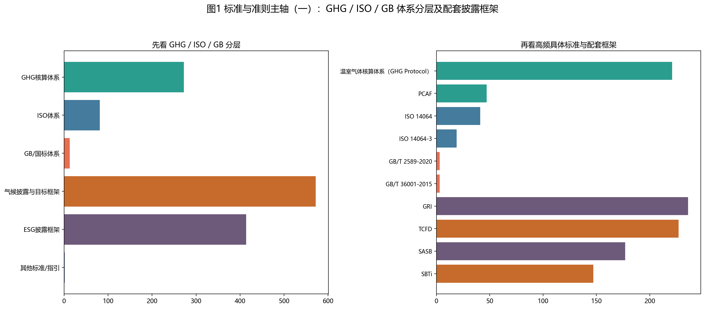
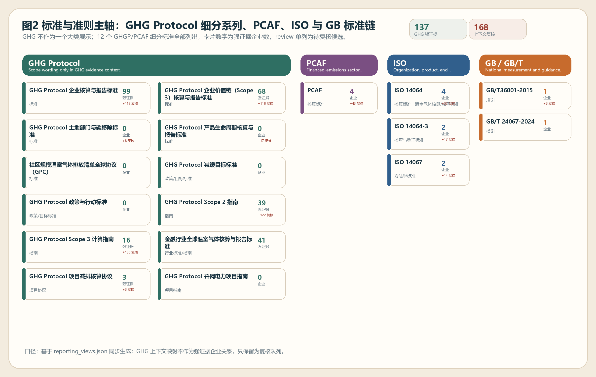
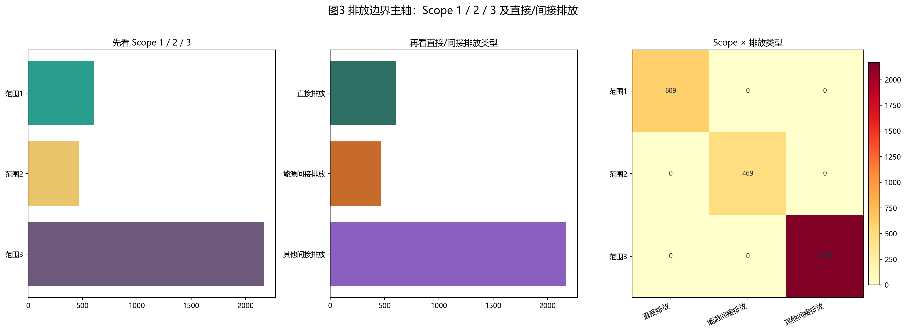
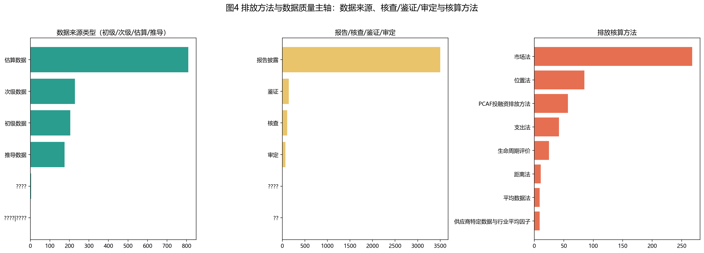
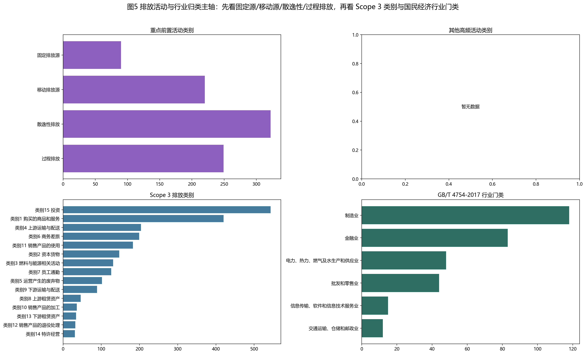
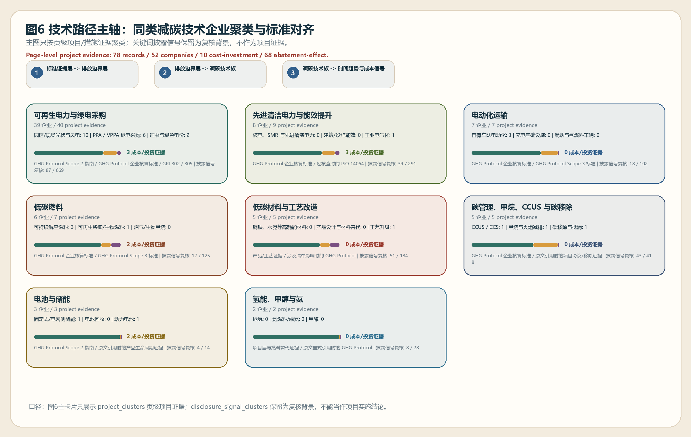

状态口径摘要
当前正式成果主体已经形成，但未匹配对象仍以“库内无母公司主报告”为主，说明后续工作的重点不再是简单别名修正，而是补库、质检和证据补齐。
我基于世界500强企业公开年报、可持续发展报告与碳相关披露文件，构建了这套 ESG 知识图谱展示站点。当前公开页以 351 家已发布企业为正式成果口径，另有 147 家因缺母公司主报告或仍待复核，暂未进入正式版主图谱。
首页主图区已按需求方原始表述重排为标准分层链条、Scope 与直接/间接排放、排放方法与数据质量、活动类别、行业归类和技术聚类展示。原 10 份示范样本图表已下沉至附录区，仅作为单报告建模示例保留。
识别企业遵循的是 GHG、ISO、GB/T、GRI、TCFD、IFRS S2、ESRS/CSRD 等哪一类体系，并细化到 standard、guideline、principle、核查/鉴证标准、目标审定指引等角色。
识别初级数据、次级数据、估算/推导、报告披露、核查、鉴证、审定，以及固定源、移动源、散逸性排放、过程排放、外购电力与 Scope 3 类别等方法学信息。
这张表以公司级互斥状态为口径，直接汇总当前 500 家正式推进对象分别处于“已发布成果、待发布、未匹配待补库/复核”中的哪一类，并保持合计严格闭合到 500 家。
当前正式成果主体已经形成，但未匹配对象仍以“库内无母公司主报告”为主，说明后续工作的重点不再是简单别名修正，而是补库、质检和证据补齐。
开放未决匹配中，绝大部分是当前库存内没有可安全归属母公司的正式主报告。
队列的主要压力已经从报告匹配转向抽取质量和证据缺口清理。
这张表以公司级互斥状态为口径，直接汇总当前 500 家正式推进对象分别处于“已发布成果、待发布、未匹配待补库/复核”中的哪一类，并保持合计严格闭合到 500 家。
| 一级状态 | 二级状态 | 企业数 | 占 500 家比例 | 当前口径 | 下一步处理 |
|---|---|---|---|---|---|
| 正式成果 | 已完成正式批次图谱并接入站点 | 351 | 70.2% | 已完成报告匹配、页级抽取、证据挖掘、批次图谱构建，并已接入现有发布站点。 | 持续清理 extract_quality 与 evidence_gap，并做增量更新。 |
| 未匹配待补库/复核 | 库内无母公司主报告 | 141 | 28.2% | 当前库存中未发现可安全归属母公司的正式主报告文件。 | 保持未匹配状态，按高价值对象继续二次检索补库。 |
| 未匹配待补库/复核 | 仅发现子公司/关联主体文件 | 6 | 1.2% | 仅发现上市子公司或关联经营主体材料，不能替代母公司主报告。 | 人工复核是否补采母公司主报告；现有关联主体文件不直接入主图谱。 |
| 未匹配待补库/复核 | 人工判定驳回的错误匹配 | 2 | 0.4% | 已存在人工驳回记录，确认当前候选文件不能安全匹配到母公司主报告。 | 保留 rejection note，不做硬匹配。 |
| 合计 | 500 | 100.0% | 500 家世界500强正式推进对象。 |
以下 6 张主图已统一改成正式汇报提纲口径，按“标准与准则主轴、排放边界主轴、方法与数据质量主轴、活动与行业主轴、技术路径主轴”依次展开。当前 351 家已进入正式成果，500 家总体完成边界见上方状态总分布模块。

| 层级角色 | 标准体系 | 事实条数 | 涉及企业数 |
|---|---|---|---|
| 先看核算主体系 | GHG核算体系 | 269 | 229 |
| 先看核算主体系 | ISO体系 | 81 | 69 |
| 先看核算主体系 | GB/国标体系 | 14 | 10 |
| 再看配套披露/目标框架 | 气候披露与目标框架 | 572 | 286 |
| 再看配套披露/目标框架 | ESG披露框架 | 418 | 273 |
| 补充标准/指引 | 其他标准/指引 | 12 | 8 |

| 标准体系 | 具体标准 | 角色 | 原则样例 | 事实条数 | 涉及企业数 |
|---|---|---|---|---|---|
| GHG核算体系 | GHG Protocol | 核算标准 | 相关性 | 完整性 | 221 | 221 |
| GHG核算体系 | PCAF | 核算标准 | 归因原则 | 数据质量层级 | 47 | 47 |
| GHG核算体系 | 温室气体核算体系（GHG Protocol） | 核算标准 | 相关性 | 完整性 | 1 | 1 |
| ISO体系 | ISO 14064 | 指引 | 40 | 40 | |
| ISO体系 | ISO 14064-3 | 核查与鉴证标准 | 可核查性 | 可信性 | 20 | 20 |
| ISO体系 | ISO 14067 | 方法学标准 | 生命周期视角 | 16 | 16 |
| GB/国标体系 | GB/T 2589-2020 | 计量标准 | 标准化计量 | 3 | 3 |
| GB/国标体系 | GB/T 36001-2015 | 指引 | 3 | 3 | |
| GB/国标体系 | GB/T 23331-2020 | 指引 | 1 | 1 |

| Scope | 排放类型 | 事实条数 | 涉及企业数 |
|---|---|---|---|
| 范围1 | 直接排放 | 3575 | 272 |
| 范围2 | 能源间接排放 | 2035 | 246 |
| 范围3 | 其他间接排放 | 4980 | 266 |

| 维度 | 类别 | 事实条数 | 涉及企业数 |
|---|---|---|---|
| 数据来源类型 | 估算数据 | 3675 | 255 |
| 数据来源类型 | 推导数据 | 1067 | 186 |
| 数据来源类型 | 次级数据 | 1014 | 163 |
| 数据来源类型 | 初级数据 | 800 | 145 |
| 核查/鉴证/审定 | 报告披露 | 13040 | 310 |
| 核查/鉴证/审定 | 鉴证 | 1001 | 208 |
| 核查/鉴证/审定 | 核查 | 605 | 155 |
| 核查/鉴证/审定 | 审定 | 294 | 76 |
| 计算方法 | 市场法 | 1562 | 148 |
| 计算方法 | 位置法 | 373 | 59 |

对应需求方原始表述的阅读顺序：先识别固定排放源、移动排放源、散逸性排放和过程排放，再下钻 Scope 3 类别，最后按 GB/T 4754-2017 国民经济行业门类进行横向比较。
| 维度 | 类别 | 事实条数/统计值 | 涉及企业数 |
|---|---|---|---|
| 重点前置活动类别 | 固定排放源 | 161 | 78 |
| 重点前置活动类别 | 移动排放源 | 423 | 143 |
| 重点前置活动类别 | 散逸性排放 | 569 | 148 |
| 重点前置活动类别 | 过程排放 | 356 | 146 |
| 其他活动类别 | 价值链活动 | 2758 | 261 |
| 其他活动类别 | 商务差旅 | 481 | 123 |
| 其他活动类别 | 投融资排放 | 447 | 41 |
| 其他活动类别 | 外购电力 | 376 | 116 |
| Scope 3类别 | 类别15 投资 | 1539 | 157 |
| Scope 3类别 | 类别1 购买的商品和服务 | 1329 | 167 |
| Scope 3类别 | 类别6 商务差旅 | 1111 | 126 |
| Scope 3类别 | 类别11 销售产品的使用 | 623 | 104 |

| 技术聚类 | 覆盖企业数 | 证据命中数 | 样例企业 |
|---|---|---|---|
| 可再生电力与绿电采购 | 329 | 3990 | 法国电力公司、Engie集团、意大利国家电力公司、埃尼石油公司、壳牌公司、Equinor公司 |
| 循环利用与回收 | 311 | 4371 | 日本钢铁工程控股公司、CRH公司、大众公司、联合信贷集团、西班牙对外银行、奥地利石油天然气集团 |
| 电动化运输 | 252 | 1442 | 福特汽车公司、印度塔塔汽车公司、现代汽车、壳牌公司、大众公司、通用汽车公司 |
| 电池与储能 | 207 | 995 | 福特汽车公司、Engie集团、丰田汽车公司、宁德时代新能源科技股份有限公司、现代汽车、沃尔沃集团 |
| 低碳燃料 | 197 | 840 | 壳牌公司、Engie集团、波兰国营石油公司、道达尔能源公司、联合航空控股公司、汉莎集团 |
| 氢能与甲醇 | 186 | 1008 | 壳牌公司、Engie集团、波兰国营石油公司、奥地利石油天然气集团、日本钢铁工程控股公司、韩国天然气公司 |
| 碳管理与碳移除 | 169 | 640 | 联合信贷集团、奥地利石油天然气集团、英国劳埃德银行集团、壳牌公司、埃尼石油公司、Equinor公司 |
| 低碳材料 | 153 | 456 | 日本钢铁工程控股公司、CRH公司、日本制铁集团公司、安赛乐米塔尔、德意志银行、法国电力公司 |
我把近期新增的 BBVA / Lloyds 人工回填事实直接挂到首页，方便先看新增标准依据与方法学证据，再进入批次表核对全量结构化结果。
我将该案例作为银行业人工回填样例，补强了原则性标准引用，以及 Scope 2 / Scope 3 的数据质量与方法依据。
我将该案例作为鉴证与方法学补强样例，补入了鉴证标准、英国碳披露监管要求，以及 Scope 2 / Scope 3 的边界与支出法依据。
该模块展示当前开放未决匹配的诊断分布，以及“仅发现子公司/关联主体文件”场景下的二级人工复核结构。前者用于解释为什么当前不能硬配母公司主报告，后者用于区分“上市子公司报告”与“集团关联经营主体报告”。
当前没有待处理的高价值事实回填任务。
当前未决匹配主要集中在“库内无母公司主报告”，说明未匹配问题首先是原始语料缺口，而不是简单别名错误。
已定位到主体一致文件，可直接进入 override 写回与匹配确认。
仅找到集团体系内其他主体文件，当前不能直接挂靠到母公司名下。
当前仅找到附录、数据包或非主报告文件，仍缺母公司主报告。
在现有库存中未定位到可安全归属于母公司的主报告文件。
已将“库内无母公司主报告”进一步区分为“值得二次检索补库”与“当前库内确实缺主报告文件”。前者说明当前仍存在下载、seed 或候选信号，后者则表示现有库内暂无可追索线索，不宜继续硬配。
当前还有可追索信号，如名单下载字段、seed 候选或近似命中，适合继续补库。
现有库内未出现可追索的下载或候选信号，应先作为缺口台账保留。
关联主体场景以“上市子公司报告”为主，这类文件可作为体系内辅助证据，但不能直接替代母公司主报告进入主图谱。
证据文件主体是集团下属上市平台，原则上只可作为关联证据，不直接替代母公司主报告。
证据文件主体更接近集团体系下经营主体，需要继续核查是否存在母公司层面的正式报告。
优先展示最值得二次检索补库的目标，同时补充当前库内确缺主报告的代表样例，便于在汇报时说明“继续补采”与“先冻结缺口”的边界。
国家/行业: 中国 / 公用设施
国家/行业: 中国 / 工程与建筑
国家/行业: 中国 / 化学品
国家/行业: 中国 / 银行：商业储蓄
国家/行业: 美国 / 财产与意外保险（股份）
国家/行业: 美国 / 保健：保险和管理医保
国家/行业: 美国 / 食品店和杂货店
国家/行业: 美国 / 电信
以下卡片逐条展示当前 6 条“仅发现子公司/关联主体文件”案例，便于在汇报中直观看到为什么这些文件不能直接替代母公司主报告。
库内仅发现“陕西煤业股份有限公司”年度报告，属于集团下属上市主体材料，不能直接等同于“陕西煤业化工集团”母公司主报告。
库内仅发现“保利发展”可持续发展报告，属于保利体系关联上市主体，不能直接作为“中国保利集团”母公司主报告。
库内仅发现“海亮股份”ESG 报告，属于上市子公司材料，不能直接等同于“海亮集团”母公司主报告。
库内仅发现“首钢股份”可持续发展报告，属于集团下属上市主体材料，不能直接等同于“首钢集团”母公司主报告。
库内仅发现“湖南华菱钢铁股份有限公司”可持续发展报告，属于集团体系下上市主体材料，不能直接等同于“湖南钢铁集团”母公司主报告。
库内仅见“奇瑞汽车”ESG 报告，属于奇瑞体系经营主体材料，不能直接等同于“奇瑞控股集团”母公司主报告。
当前 500 份正式推进版与 10 份 demo 分离推进。原始 203 条未决匹配正在持续压缩，并已完成 Batch 15 在“标准与准则维度 + 排放方法与数据质量维度”上的结构化回填。
以下展示的是当前批次 25 份已确认匹配报告的回填结果，以及当前 500 份推进版的匹配、页级抽取、证据挖掘与 review queue 状态。
以下展示的是当前批次 25 份已确认匹配报告的回填结果，以及当前 500 份推进版的匹配、页级抽取、证据挖掘与 review queue 状态。
当前 500 份正式推进版与 10 份 demo 分离推进。原始 203 条未决匹配正在持续压缩，并已完成 Batch 14 在“标准与准则维度 + 排放方法与数据质量维度”上的结构化回填。
以下展示的是当前批次 25 份已确认匹配报告的回填结果，以及当前 500 份推进版的匹配、页级抽取、证据挖掘与 review queue 状态。
以下展示的是当前批次 25 份已确认匹配报告的回填结果，以及当前 500 份推进版的匹配、页级抽取、证据挖掘与 review queue 状态。
当前 500 份正式推进版与 10 份 demo 分离推进。原始 203 条未决匹配正在持续压缩，并已完成 Batch 13 在“标准与准则维度 + 排放方法与数据质量维度”上的结构化回填。
以下展示的是当前批次 25 份已确认匹配报告的回填结果，以及当前 500 份推进版的匹配、页级抽取、证据挖掘与 review queue 状态。
以下展示的是当前批次 25 份已确认匹配报告的回填结果，以及当前 500 份推进版的匹配、页级抽取、证据挖掘与 review queue 状态。
当前 500 份正式推进版与 10 份 demo 分离推进。原始 203 条未决匹配正在持续压缩，并已完成 Batch 12 在“标准与准则维度 + 排放方法与数据质量维度”上的结构化回填。
以下展示的是当前批次 25 份已确认匹配报告的回填结果，以及当前 500 份推进版的匹配、页级抽取、证据挖掘与 review queue 状态。
以下展示的是当前批次 25 份已确认匹配报告的回填结果，以及当前 500 份推进版的匹配、页级抽取、证据挖掘与 review queue 状态。
当前 500 份正式推进版与 10 份 demo 分离推进。原始 203 条未决匹配正在持续压缩，并已完成 Batch 11 在“标准与准则维度 + 排放方法与数据质量维度”上的结构化回填。
以下展示的是当前批次 25 份已确认匹配报告的回填结果，以及当前 500 份推进版的匹配、页级抽取、证据挖掘与 review queue 状态。
以下展示的是当前批次 25 份已确认匹配报告的回填结果，以及当前 500 份推进版的匹配、页级抽取、证据挖掘与 review queue 状态。
当前 500 份正式推进版与 10 份 demo 分离推进。原始 203 条未决匹配正在持续压缩，并已完成 Batch 10 在“标准与准则维度 + 排放方法与数据质量维度”上的结构化回填。
以下展示的是当前批次 25 份已确认匹配报告的回填结果，以及当前 500 份推进版的匹配、页级抽取、证据挖掘与 review queue 状态。
以下展示的是当前批次 25 份已确认匹配报告的回填结果，以及当前 500 份推进版的匹配、页级抽取、证据挖掘与 review queue 状态。
当前 500 份正式推进版与 10 份 demo 分离推进。原始 203 条未决匹配正在持续压缩，并已完成 Batch 09 在“标准与准则维度 + 排放方法与数据质量维度”上的结构化回填。
以下展示的是当前批次 25 份已确认匹配报告的回填结果，以及当前 500 份推进版的匹配、页级抽取、证据挖掘与 review queue 状态。
以下展示的是当前批次 25 份已确认匹配报告的回填结果，以及当前 500 份推进版的匹配、页级抽取、证据挖掘与 review queue 状态。
当前 500 份正式推进版与 10 份 demo 分离推进。原始 203 条未决匹配正在持续压缩，并已完成 Batch 08 在“标准与准则维度 + 排放方法与数据质量维度”上的结构化回填。
以下展示的是当前批次 25 份已确认匹配报告的回填结果，以及当前 500 份推进版的匹配、页级抽取、证据挖掘与 review queue 状态。
以下展示的是当前批次 25 份已确认匹配报告的回填结果，以及当前 500 份推进版的匹配、页级抽取、证据挖掘与 review queue 状态。
当前 500 份正式推进版与 10 份 demo 分离推进。原始 203 条未决匹配正在持续压缩，并已完成 Batch 07 在“标准与准则维度 + 排放方法与数据质量维度”上的结构化回填。
以下展示的是当前批次 25 份已确认匹配报告的回填结果，以及当前 500 份推进版的匹配、页级抽取、证据挖掘与 review queue 状态。
以下展示的是当前批次 25 份已确认匹配报告的回填结果，以及当前 500 份推进版的匹配、页级抽取、证据挖掘与 review queue 状态。
当前 500 份正式推进版与 10 份 demo 分离推进。原始 203 条未决匹配正在持续压缩，并已完成 Batch 06 在“标准与准则维度 + 排放方法与数据质量维度”上的结构化回填。
以下展示的是当前批次 25 份已确认匹配报告的回填结果，以及当前 500 份推进版的匹配、页级抽取、证据挖掘与 review queue 状态。
以下展示的是当前批次 25 份已确认匹配报告的回填结果，以及当前 500 份推进版的匹配、页级抽取、证据挖掘与 review queue 状态。
当前 500 份正式推进版与 10 份 demo 分离推进。原始 203 条未决匹配正在持续压缩，并已完成 Batch 05 在“标准与准则维度 + 排放方法与数据质量维度”上的结构化回填。
以下展示的是当前批次 25 份已确认匹配报告的回填结果，以及当前 500 份推进版的匹配、页级抽取、证据挖掘与 review queue 状态。
以下展示的是当前批次 25 份已确认匹配报告的回填结果，以及当前 500 份推进版的匹配、页级抽取、证据挖掘与 review queue 状态。
当前 500 份正式推进版与 10 份 demo 分离推进。原始 203 条未决匹配正在持续压缩，并已完成 Batch 04 在“标准与准则维度 + 排放方法与数据质量维度”上的结构化回填。
以下展示的是当前批次 25 份已确认匹配报告的回填结果，以及当前 500 份推进版的匹配、页级抽取、证据挖掘与 review queue 状态。
以下展示的是当前批次 25 份已确认匹配报告的回填结果，以及当前 500 份推进版的匹配、页级抽取、证据挖掘与 review queue 状态。
当前 500 份正式推进版与 10 份 demo 分离推进。原始 203 条未决匹配正在持续压缩，并已完成 Batch 03 在“标准与准则维度 + 排放方法与数据质量维度”上的结构化回填。
以下展示的是当前批次 25 份已确认匹配报告的回填结果，以及当前 500 份推进版的匹配、页级抽取、证据挖掘与 review queue 状态。
以下展示的是当前批次 25 份已确认匹配报告的回填结果，以及当前 500 份推进版的匹配、页级抽取、证据挖掘与 review queue 状态。
当前 500 份正式推进版与 10 份 demo 分离推进。原始 203 条未决匹配正在持续压缩，并已完成 Batch 02 在“标准与准则维度 + 排放方法与数据质量维度”上的结构化回填。
以下展示的是当前批次 25 份已确认匹配报告的回填结果，以及当前 500 份推进版的匹配、页级抽取、证据挖掘与 review queue 状态。
以下展示的是当前批次 25 份已确认匹配报告的回填结果，以及当前 500 份推进版的匹配、页级抽取、证据挖掘与 review queue 状态。
当前 500 份正式推进版与 10 份 demo 分离推进。原始 203 条未决匹配正在持续压缩，并已完成 Batch 01 在“标准与准则维度 + 排放方法与数据质量维度”上的结构化回填。
以下展示的是当前批次 25 份已确认匹配报告的回填结果，以及当前 500 份推进版的匹配、页级抽取、证据挖掘与 review queue 状态。
以下展示的是当前批次 25 份已确认匹配报告的回填结果，以及当前 500 份推进版的匹配、页级抽取、证据挖掘与 review queue 状态。